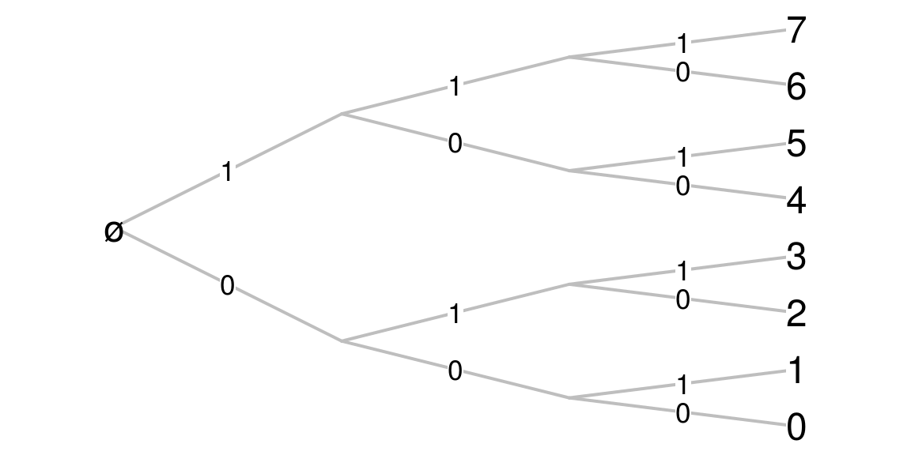

-
Avoiding nested loops with a Cantor expansion
10/08/2015
Source(first version)
I added an answer to a question on Stackoverflow about the problem of a variable amount of nested loops. But an answer to a four years old question on Stackoverflow rarely receives some attention.
Cantor expansions of integers
My answer is based on a Cantor expansion of the integers. The binary representation of integer numbers is well-known. In R, use this function to get it:
number2binary <- function(number, noBits=1+floor(log2(max(number,1)))) { if(noBits < 1+floor(log2(number))) warning(sprintf("noBits=%s is not enough", noBits)) return( as.numeric(intToBits(number))[1:noBits] ) } number2binary(5) ## [1] 1 0 1 number2binary(5, noBits=4) ## [1] 1 0 1 0The second argument,
noBits, allows to fix the length of the binary representation, adding some0to the right to reach it.The binary representation is a system of numerotation. The correspondence between the usual decimal representation and the binary representation is the following:
nmax <- 10 data.frame( N=0:nmax, expansion=vapply(0:nmax, function(i) paste(myutils::number2binary(i), collapse=""), character(1)) ) ## N expansion ## 1 0 0 ## 2 1 1 ## 3 2 10 ## 4 3 11 ## 5 4 100 ## 6 5 101 ## 7 6 110 ## 8 7 111 ## 9 8 1000 ## 10 9 1001 ## 11 10 1010The numerotation for the \(2^n\) first integers is also given by the Cartesian product of the set \(\{0,1\}\) with itself \(n\) times:
expand.grid(epsilon0=c(0,1), epsilon1=c(0,1), epsilon2=c(0,1)) ## epsilon0 epsilon1 epsilon2 ## 1 0 0 0 ## 2 1 0 0 ## 3 0 1 0 ## 4 1 1 0 ## 5 0 0 1 ## 6 1 0 1 ## 7 0 1 1 ## 8 1 1 1Thus, one can view the binary representation of a number \(n\) as the \(n\)-th element of this Cartesian product (for the colexicographic order). The enumeration is easily viewed on a tree:

Well, everybody knows that. In mathematical terms, the binary representation allows to write any natural number \(N\) as a finite sequence of digits \(\epsilon_i \in \{0,1\}\): \[ N = \text{"}\epsilon_0\epsilon_1\epsilon_2\ldots\epsilon_n\text{"}. \] and that means \[ N = \epsilon_0 + \epsilon_1\times 2 + \epsilon_2 \times 2^2 + \ldots + \epsilon_n \times 2^n. \]
Such a representation is more generally possible with digits \(\epsilon_i \in \{0,\ldots, r_n-1\}\), where \((r_n)\) is a sequence of integer numbers \(\geq 2\), and then the representation means \[ N = \epsilon_0 + \epsilon_1\times \ell_1 + \epsilon_2 \times \ell_2 + \ldots + \epsilon_n \times \ell_n, \] where \(\ell_n=\prod_{i=0}^{n-1} r_i\), and then this expansion of \(N\) is called its \((r_n)\)-ary expansion. The binary expansion is the case when \(r_n\equiv 2\). The general \((r_n)\)-ary expansion is called a Cantor’s number system. There also are, beyond the scope of this post, more general systems of numeration.
For example, the \((3,4,5)\)-ary representation of a number \(n\) is the \(n\)-th element of this Cartesian product \(\{0,1,2\}\times\{0,1,2,3\}\times\{0,1,2,3,4\}\).
One gets the integer \(N\) from its \((r_n)\)-ary expansion by simply applying the above formula. Conversely, the derivation of the \((r_n)\)-ary from an integer is given by the greedy algorithm:
- While \(N>0\)
- Take the first index \(k\) such that \(\ell_k > N\)
- Set \(\epsilon_k\) to be the Euclidean quotient of \(N\) by \(\ell_{k-1}\), and update \(N\) to be the remainder
This R function returns the \((r_n)\)-ary expansion, using the binary expansion as the default one:
intToAry <- function(n, sizes=rep(2, 1+floor(log2(max(n,1))))){ l <- c(1, cumprod(sizes)) epsilon <- numeric(length(sizes)) while(n>0){ k <- which.min(l<=n) e <- floor(n/l[k-1]) epsilon[k-1] <- e n <- n-e*l[k-1] } return(epsilon) } aryToInt <- function(epsilon, sizes=rep(2, length(epsilon)-1)){ sum(epsilon*c(1,cumprod(sizes[1:(length(epsilon)-1)]))) }As an example:
intToAry(29, c(3, 4, 5)) ## [1] 2 1 2means that \(29 = 2\times 1 + 1 \times 3 + 2 \times (3\times 4)\).
Note that the last element of
sizes, here5, is not visible in the expansion. It only fixes the maximal value of \(\epsilon_2\): the \((3,4,5)\)-ary expansion of \(N\) is \[ N = \epsilon_0 + \epsilon_1 \times 3 + \epsilon_2 \times (3\times 4) \] with \(\epsilon_0 \in \{0,1,2\}\), \(\epsilon_1 \in \{0, 1, 2, 3\}\), \(\epsilon_2 \in \{0, 1, 2, 3, 4\}\).Application to nested loops
Assume you have a nested loop:
for(i in 1:3){ for(j in 1:4){ for(k in 1:5){ doSomething(c(i,j,k)) } } }This nested loop can be reduced to only one loop with the \((3,4,5)\)-ary representation:
for(n in 1:(3*4*5)){ doSomething(intToAry(n, c(3,4,5)) + 1) }A Rcpp implementation
Using the
intToAryfunction in a long loop could be time-consuming. We give below aC++implementation for R, using theRcppandinlinepackages.library(inline) src <- 'int n = as<int>(N); std::vector<int> s = as< std::vector<int> >(sizes); std::vector<int> epsilon (s.size()); std::vector<int>::iterator it; it = s.begin(); it = s.insert ( it , 1 ); int G[s.size()]; std::partial_sum (s.begin(), s.end(), G, std::multiplies<int>()); int k; while(n>0){ k=1; while(G[k]<=n){ k=k+1; } epsilon[k-1] = (int)n / G[k-1]; n = n % G[k-1]; } return wrap(epsilon); ' intToAry_Rcpp <- cxxfunction(signature(N="integer", sizes="integer"), body=src, plugin="Rcpp")intToAry_Rcpp(29, c(3,4,5)) ## [1] 2 1 2Benchmarks
The
C++implementation is clearly faster.L <- vector(mode="list", length=2*3*4*5*6*7*8*9) system.time( for(n in 1:(2*3*4*5*6*7*8*9)){ L[[n]] <- intToAry(n-1, c(2,3,4,5,6,7,8,9)) } ) ## user system elapsed ## 14.429 0.000 14.431 system.time( for(n in 1:(2*3*4*5*6*7*8*9)){ L[[n]] <- intToAry_Rcpp(n-1, c(2,3,4,5,6,7,8,9)) } ) ## user system elapsed ## 1.521 0.000 1.530A Javascript implementation
function intToAry(n, sizes) { if (n<0) throw new Error("n must be a nonnegative integer"); for (i = 0; i<sizes.length; i++) if (sizes[i]!=parseInt(sizes[i]) || sizes[i]<1){ throw new Error("sizes must be a vector of integers be >1"); }; for (var G = [1], i = 0; i<sizes.length; i++) G[i+1] = G[i] * sizes[i]; if (n>=_.last(G)) throw new Error("n must be <" + _.last(G)); for (var epsilon=[], i=0; i < sizes.length; i++) epsilon[i]=0; while(n > 0){ var k = _.findIndex(G, function(x){ return n < x; }) - 1; var e = (n/G[k])>>0; epsilon[k] = e; n = n-e*G[k]; } return epsilon; } intToAry(29, [3, 4, 5]) ## 2,1,2 - While \(N>0\)
- Home
- About
- PoirotReproducible Blogging with R Markdown
- SlidifyReproducible html5 slides from R markdown
- R-bloggersBlog posts about R, contributed by R bloggers worldwide.
- stla.overblogMy previous blog
- Timely Portfolio A great blog about R, Javascript, and more